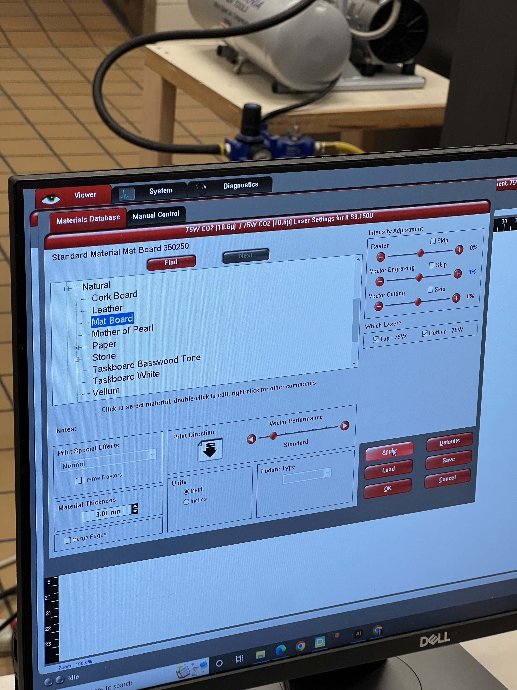
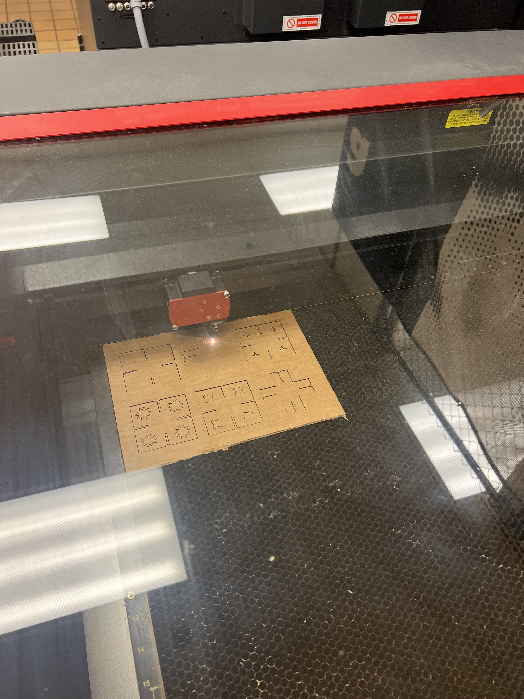
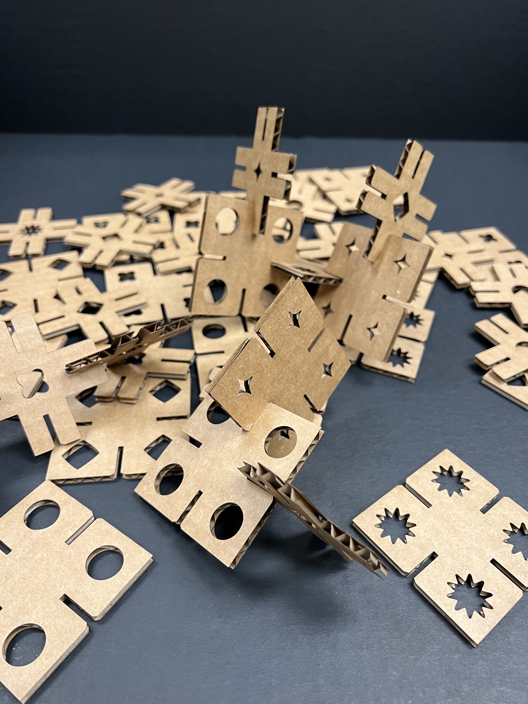
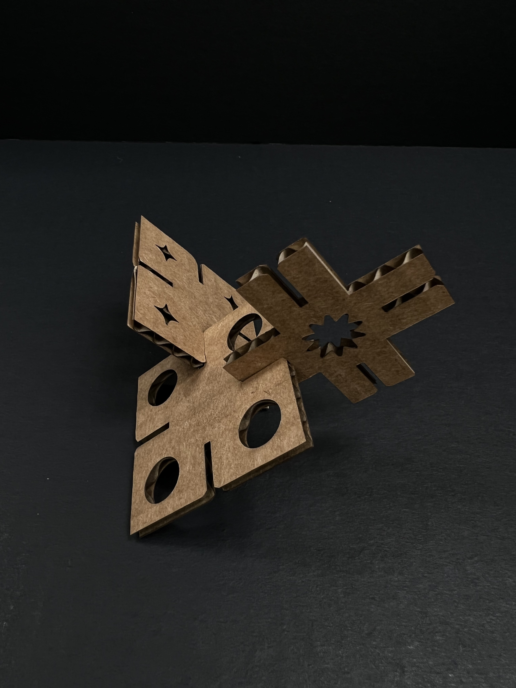
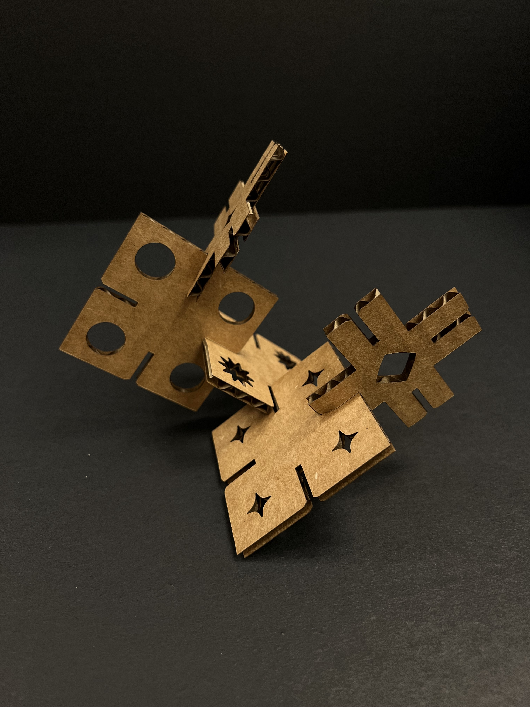
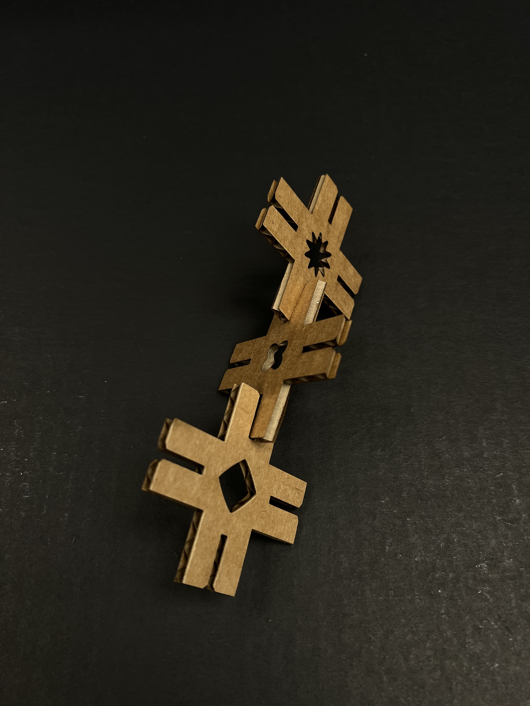
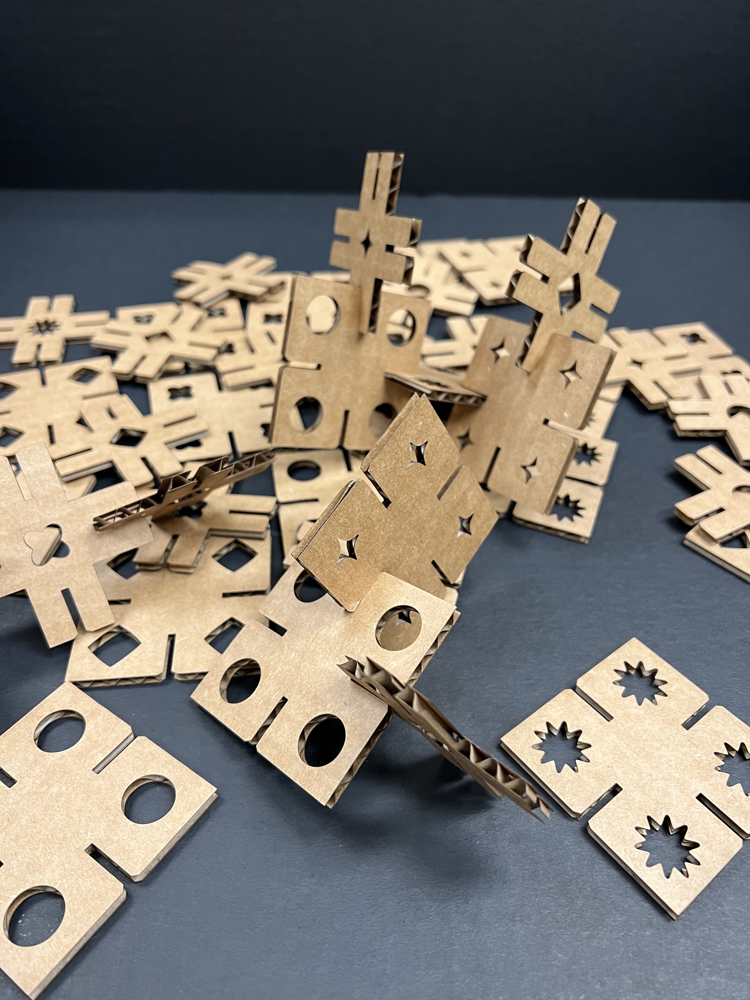
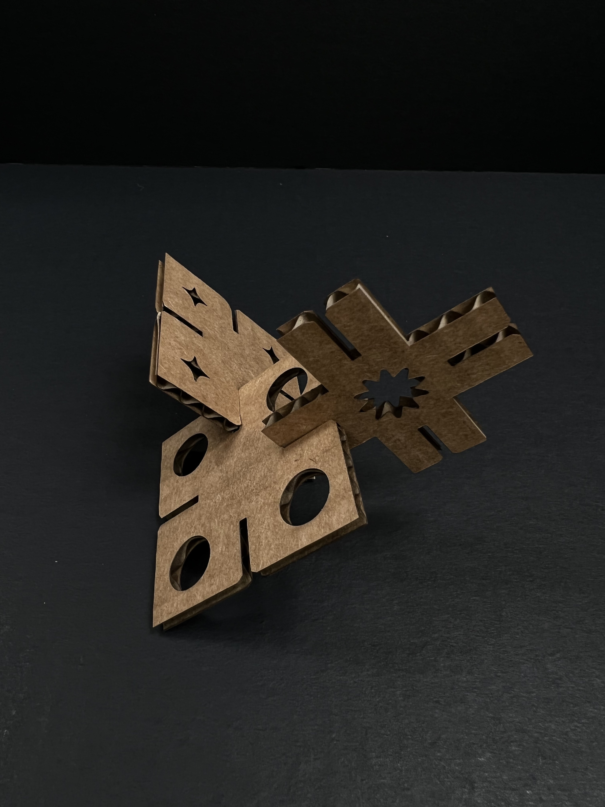
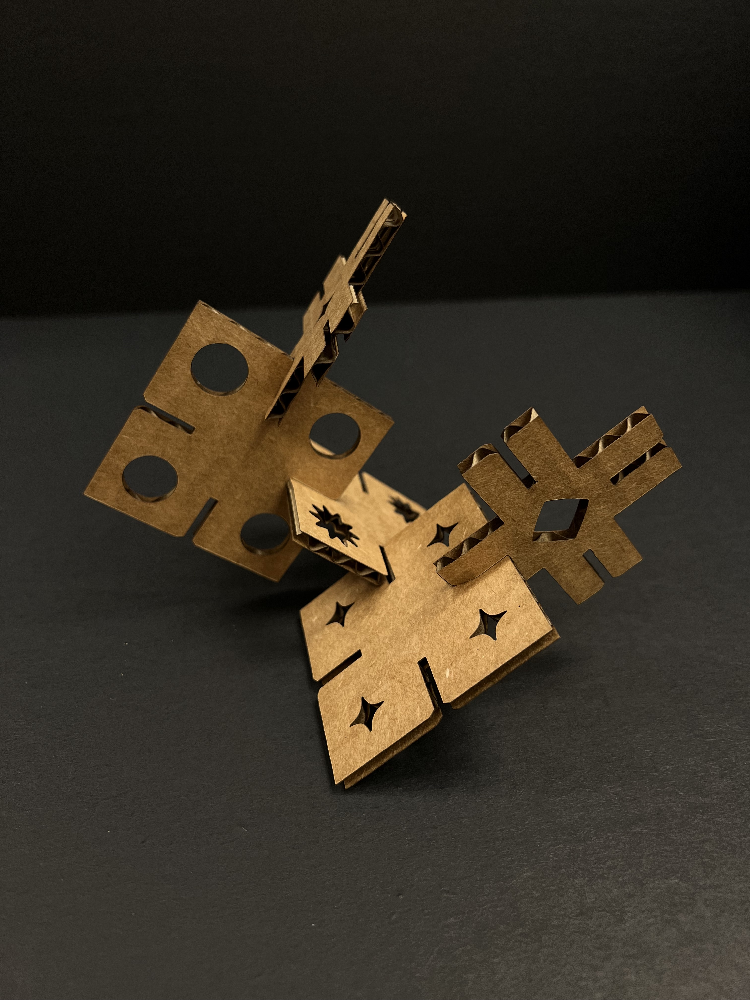
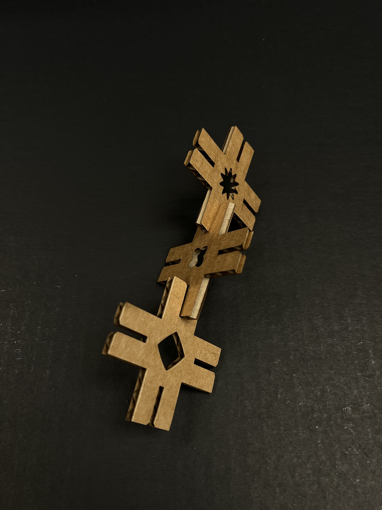

Bailey Dickey's Assignment 1!
Modelling and Laser Cutting: Laser Cut Press Fit Construction Kit

Assignment Prompt
“Make a kit consisting of at least 30 instances of at least one unique part! The parts must have slots that press fit into the other parts in the kit! The parts must be laser-cut out of cardboard! Your fit should be such that the parts do not come apart with light shaking!”
My Approach
In the pursuit of project inspiration, I turned to Pinterest. I would usually avoid doing this out of fear that I would simply end up with a copy of another person's work. However, I decided to approach this project as an exploratory lesson in using tools such as Rhino and laser cutters rather than a pure design exercise where I would feel the need to hyper-fixate on creating a truly unique concept.
After scrolling through a myriad of press-fit kits, cardboard sculptures, and children's puzzle images, I found the perfect reference image (Image 1). I then sketched a series of potential pieces I could create using similar shapes.
{kind=link}
Image 1. Pinterest Reference.
Following my ideation session, I turned to a quick round of physical prototyping using scrap cardboard (Image 2). I know that I struggle with conceptualizing measurements when I rely on purely digital means of design and drafting, so I figured it would be helpful for me to get a more hands-on start before finalizing my design in Rhino. This exercise ended up being extremely helpful in determining size requirements and also in finding ways to alter my design to be slightly more unique rather than a pure copy of my reference image. I decided to add a chamfer to my pieces for a better fit and also mocked up designs to explore laser-cutting patterns into some of the solid bits of the pieces (Image 3).
{kind=link}
Image 2. Hand-cut Prototype.
{kind=link}
Image 3. Final Design in Rhino.
With solidified design plans, I then moved into Rhino to create my source files or digital patterns for the laser cutter. I found that there were plenty of resources on youtube and web boards that I was able to use for reference and general guidance. However, the laser cutter was still down, so I couldn’t be entirely sure that my measurements, especially the kerf measurements, were correct. When the laser cutter is back up and running, I will be able to make more fine-tuned adjustments based on test cuts. The Rhino design file was also transferred to Adobe Illustrator as a flat image as a final step before printing could occur.
Printing Process
With my files in hand, or more accurately in my Google Drive, I finally headed over to the Mill Makerspace when I heard that the laser cutter was back in operation. Jess and I decided to test the makerspace laser cutter together (Image 5) but quickly learned that it was again out of order.

Image 4. Jess working in the makerspace.
Forced out of the makerspace, Jess and I headed to The 8 to try again. Here we were able to print our projects successfully. Following the instructions in the lab, I uploaded my Illustrator file into the computer connected to the laser cutter. I set the material to mat board as it was the material most similar to cardboard (Image 6). 
Image 5. My laser cutter settings.
I removed one mm from my cardboard measurement to adjust for the cardboard being less dense than mat board. I then processed a test print (Images 7, 8).

Image 5. My laser cutter settings.
Image 6. Laser cut test pieces.
The print came out clean, and the pieces fit together without being too snug or falling apart, likely because I measured my hand-cut test cardboard with a caliper instead of a test laser cut sheet. After my successful test print, I went ahead and cut my entire press-fit kit with a total of 40 pieces (shown below).
 







Future Considerations
-
I would adjust the laser strength and test a variety of methods that would produce less burn marks on the backside of the cardboard.
Continue practicing my rhino skills to create more even measurements. I did have to flip back and forth between illustrator and rhino to make fine adjustments and check for symmetry.
Source Files